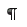

Тест №2. Набор текста
Выберите
один
правильный ответ. После ответа на все вопросы нажмите кнопку «Готово».
Непечатаемые знаки:
не печатаются на принтере
не отображаются в документе после его сохранения
показывают измененные места в документе
показывают места в документе, которые не будут отпечатаны
Выберите правильный вариант набора текста:
Астры, тюльпаны; яблоки
монитор ,клавиатура, системный блок
Пойди туда – не знаю куда, принеси то – не знаю что
Свинка–золотая щетинка
Выберите правильный вариант набора текста:
Часовые окликают: «Кто идет?» - «Царевна!»
«Может ли,–говорит,–быть такая красота ?»
Если клавиша на панели утоплена ( как бы вдавлена внутрь ), зачем этот режим включен
« Спроси: куда мы едем ? Я добренько скажу »
Отменить последнее действие:
Escape
Alt + Back Space
Alt + Delete
Как вернуть отмененное действие:
F4
Правка
®
Шаг вперед
Что означает символ :
нажатие Enter
нажатие любой другой клавиши, кроме буквенно-цифровых
отмечает конец строки
отмечает конец страницы
Для чего используется кнопка :
для перехода в начало следующей строки
для включения/выключения режима отображения непечатаемых знаков
для печати на принтере текста вместе с непечатаемыми знаками
вместо нажатия клавиши Enter
Пробел ставится:
до знака препинания
до знака "дефис"
после знака "дефис"
после знака препинания
Клавишу Enter нажимают:
в конце каждой строки
в конце абзаца
в конце предложения
для проверки правописания
Выберите правильный алгоритм печати документа:
кнопка Office
®
Печать
®
Выбрать принтер
®
Ok
кнопка Office
®
Печать
®
Указать количество копий
®
Ok
Сделать предварительный просмотр, кнопка Office
®
Печать
®
Выбрать принтер
®
Указать количество копий
®
Ok
Выделить нужный текст, кнопка Office
®
Печать и т.д.
Ваши ответы: